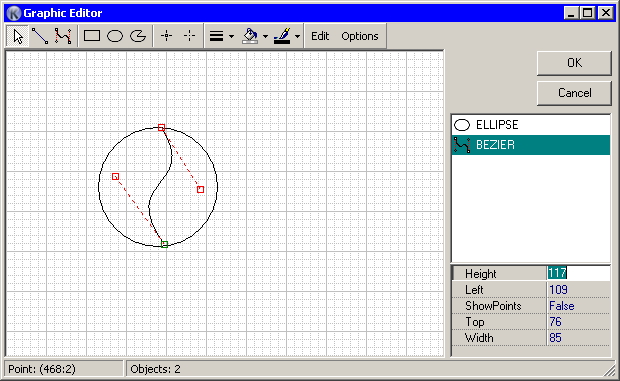

This is an editor for manipulating graphic shapes for Graphic control.

Main part of editor is design area with grid, which can be disabled by unchecking “Show grid” option. At right side is list of all shapes which show their order. Top item in this list is the most lower shape. Under list is small prperty inspector where you can change shape properties. In statusbar is showing cursor point coordinates and count of shapes.
Inserting shape into editor is quite similar to controls. Check button with shape, then click (or click and drag for resize) mouse on the design area.
When shape is inserted, you can modify it in next ways:
Few shapes can be selected at once by selecting with Shift pressed while selecting.
For every selected shape(s) you can change it's width, line color and background color (dropdown buttons on toolbar). Standard line widths are from 1 to 6 pixels, but you can enter other values in editbox in the dropdown menu. Default color is black, default background color - transparent.
By default formatting settings of newly created shapes are based on default settings. But you can set option “Create next shape with current formatting”, in this case newly created shapes will have last formatting.
Since solid shapes can have background non-transparent color, their z-order become meaningful. You can change order of selected shapes by bringing it to front of other shapes or sending to back. For that editor have two commands in edit (context) menu.
Line shape can have more then 2 points, this is simplify designing. You can insert additional points near existing line point when selecting it and using “Insert breakpoint” command from context menu. Also you can delete additional point by using “Remove breakpoint” command from context menu. When generating Koda will automatically create separate lines from this multiline.
The most shape properties visible in the property inspector are self-explanary. Some specific properties: